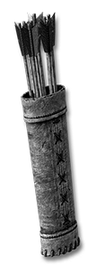
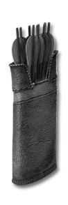
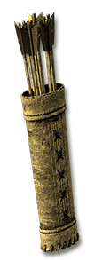
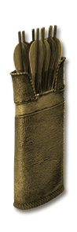

Choose curses, speed, resistances or sockets for your bow or crossbow.
Compare families Rolls and sockets Arrows for bows. Bolts for crossbows. Every quiver is endless. Vendors sell white Hexed quivers. The other families drop or can be gambled. Hexed, Flight and Anointed quivers take the Horadric reagents like other gear.
Choose your family Family Built-in bonus Random modifiers Where to find it Hexed Curses on striking 5% Chance to cast level 15 Amplify Damage on striking or 5% Chance to cast level 15 Lower Resist on striking Item-level bands 1 → 66+ · highest shown Magic & rare modifiers Echo of Duriel (III) Nightmare · 1.445% (1 in 69) World drop: Plain monsters Normal · 0.1563% (1 in 640) 

Flight Attack speed +20% Increased Attack Speed Item-level bands 1 → 66+ · highest shown Magic & rare modifiers Echo of Duriel (III) Nightmare · 1.445% (1 in 69) World drop: Plain monsters Normal · 0.1563% (1 in 640) 

Anointed All resistances All Resistances +12 Item-level bands 1 → 66+ · highest shown Magic & rare modifiers Echo of Duriel (III) Nightmare · 1.445% (1 in 69) World drop: Plain monsters Normal · 0.1563% (1 in 640) Graven White runeword base Socketed (1-3) Item-level bands 1 → 1+ · highest shown Gems, runes and runewords; no reagents Echo of Duriel (III) Nightmare · 1.286% (1 in 78) World drop: Plain monsters Normal · 0.1458% (1 in 686)
Named routes reach the highest listed bonus band. World-drop examples are at 0% magic find. Item pages list every source and difficulty.
Bonuses, rolls and sockets Every item-level band and modifier is listed below. Built-in bonuses and random modifiers are separate. The Hexed curse is Amplify Damage or Lower Resist, picked at random when it drops or a reagent remakes it.
Hexed Curses on striking 3 bands · 6 bonus lines Built-in bonus Item level 1–35 5% Chance to cast level 3 Amplify Damage on striking or 5% Chance to cast level 3 Lower Resist on striking
Item level 36–65 5% Chance to cast level 8 Amplify Damage on striking or 5% Chance to cast level 8 Lower Resist on striking
Item level 66+ 5% Chance to cast level 15 Amplify Damage on striking or 5% Chance to cast level 15 Lower Resist on striking
Magic & rare modifiers These roll in addition to the built-in bonus. Affix level and required character level are shown separately.
Bronze → Meteoric Magic & rare prefix +121-150 to Attack Rating Highest tier shown All rolls and levels Modifier Roll Affix level Required level Quality Bronze +10-20 to Attack Rating 1 1 Magic & rare Iron +21-40 to Attack Rating 4 3 Magic & rare Steel +41-60 to Attack Rating 8 6 Magic & rare Silver +61-80 to Attack Rating 12 9 Magic & rare Gold +81-100 to Attack Rating 17 12 Magic & rare Platinum +101-120 to Attack Rating 22 16 Magic & rare Meteoric +121-150 to Attack Rating 27 20 Magic & rare
of Firebolts → of Nova Magic & rare suffix 12% Chance to cast level 4 Nova on striking Highest tier shown All rolls and levels Modifier Roll Affix level Required level Quality of Firebolts 5% Chance to cast level 3 Fire Bolt on attack 6 4 Magic & rare of Firebolts 10% Chance to cast level 8 Fire Bolt on striking 16 12 Magic & rare of Nova 10% Chance to cast level 3 Nova on striking 18 13 Magic & rare of Firebolts 10% Chance to cast level 4 Fire Bolt on attack 20 15 Magic & rare of Nova 12% Chance to cast level 4 Nova on striking 28 21 Magic & rare
of Bleeding → of Bloodletting Magic & rare suffix +11-20% Chance of Open Wounds Highest tier shown All rolls and levels Modifier Roll Affix level Required level Quality of Bleeding +5-10% Chance of Open Wounds 12 9 Magic & rare of Bloodletting +11-20% Chance of Open Wounds 45 34 Magic & rare
of Felling → of the Deathblow Magic & rare suffix +11-20% Deadly Strike Highest tier shown All rolls and levels Modifier Roll Affix level Required level Quality of Felling +5-10% Deadly Strike 12 9 Magic & rare of the Deathblow +11-20% Deadly Strike 45 34 Magic & rare
of Crushing → of Ruin Magic & rare suffix +11-15% Chance of Crushing Blow Highest tier shown All rolls and levels Modifier Roll Affix level Required level Quality of Crushing +5-10% Chance of Crushing Blow 12 9 Magic & rare of Ruin +11-15% Chance of Crushing Blow 45 34 Magic & rare
Flight Attack speed 3 bands · 3 bonus lines Built-in bonus Item level 1–35 +10% Increased Attack Speed
Item level 36–65 +15% Increased Attack Speed
Item level 66+ +20% Increased Attack Speed
Magic & rare modifiers These roll in addition to the built-in bonus. Affix level and required character level are shown separately.
Bronze → Meteoric Magic & rare prefix +121-150 to Attack Rating Highest tier shown All rolls and levels Modifier Roll Affix level Required level Quality Bronze +10-20 to Attack Rating 1 1 Magic & rare Iron +21-40 to Attack Rating 4 3 Magic & rare Steel +41-60 to Attack Rating 8 6 Magic & rare Silver +61-80 to Attack Rating 12 9 Magic & rare Gold +81-100 to Attack Rating 17 12 Magic & rare Platinum +101-120 to Attack Rating 22 16 Magic & rare Meteoric +121-150 to Attack Rating 27 20 Magic & rare
of Readiness Magic & rare suffix +10% Increased Attack Speed Highest tier shown All rolls and levels Modifier Roll Affix level Required level Quality of Readiness +10% Increased Attack Speed 5 3 Magic & rare
of Dexterity → of Skill Magic & rare suffix +3-5 to Dexterity Highest tier shown All rolls and levels Modifier Roll Affix level Required level Quality of Dexterity +1-2 to Dexterity 1 1 Magic & rare of Skill +3-5 to Dexterity 11 8 Magic & rare
of Skewering → of Transfixing Magic & rare suffix +21-35% Piercing Attack Highest tier shown All rolls and levels Modifier Roll Affix level Required level Quality of Skewering +10-20% Piercing Attack 12 9 Magic & rare of Transfixing +21-35% Piercing Attack 45 34 Magic & rare
of Hobbling → of Fettering Magic & rare suffix Slows Target by 16-25% Highest tier shown All rolls and levels Modifier Roll Affix level Required level Quality of Hobbling Slows Target by 10-15% 12 9 Magic & rare of Fettering Slows Target by 16-25% 45 34 Magic & rare
Anointed All resistances 3 bands · 3 bonus lines Built-in bonus Item level 1–35 All Resistances +5
Item level 36–65 All Resistances +8
Item level 66+ All Resistances +12
Magic & rare modifiers These roll in addition to the built-in bonus. Affix level and required character level are shown separately.
Azure → Cobalt Magic & rare prefix Cold Resist +21-30% Highest tier shown All rolls and levels Modifier Roll Affix level Required level Quality Azure Cold Resist +5-10% 5 3 Magic & rare Lapis Cold Resist +11-20% 12 9 Magic & rare Cobalt Cold Resist +21-30% 18 13 Magic & rare
Crimson → Garnet Magic & rare prefix Fire Resist +21-30% Highest tier shown All rolls and levels Modifier Roll Affix level Required level Quality Crimson Fire Resist +5-10% 5 3 Magic & rare Russet Fire Resist +11-20% 12 9 Magic & rare Garnet Fire Resist +21-30% 18 13 Magic & rare
Tangerine → Coral Magic & rare prefix Lightning Resist +21-30% Highest tier shown All rolls and levels Modifier Roll Affix level Required level Quality Tangerine Lightning Resist +5-10% 5 3 Magic & rare Ocher Lightning Resist +11-20% 12 9 Magic & rare Coral Lightning Resist +21-30% 18 13 Magic & rare
Beryl → Jade Magic & rare prefix Poison Resist +21-30% Highest tier shown All rolls and levels Modifier Roll Affix level Required level Quality Beryl Poison Resist +5-10% 5 3 Magic & rare Viridian Poison Resist +11-20% 12 9 Magic & rare Jade Poison Resist +21-30% 18 13 Magic & rare
Eburine → Ivory Includes magic-only rolls prefix +41-64 Defense Highest tier shown All rolls and levels Modifier Roll Affix level Required level Quality Eburine +9-20 Defense 16 12 Magic & rare Bone +21-40 Defense 32 24 Magic & rare Ivory +41-64 Defense 64 56 Magic only
of the Jackal → of the Mammoth Magic & rare suffix +31-40 to Life Highest tier shown All rolls and levels Modifier Roll Affix level Required level Quality of the Jackal +1-5 to Life 4 3 Magic & rare of the Fox +6-10 to Life 11 8 Magic & rare of the Wolf +11-20 to Life 27 20 Magic & rare of the Tiger +21-30 to Life 43 35 Magic & rare of the Mammoth +31-40 to Life 59 51 Magic & rare
of Balance → of Equilibrium Magic & rare suffix +17% Faster Hit Recovery Highest tier shown All rolls and levels Modifier Roll Affix level Required level Quality of Balance +10% Faster Hit Recovery 5 3 Magic & rare of Equilibrium +17% Faster Hit Recovery 9 6 Magic & rare
of Health → of Life Magic & rare suffix Damage Reduced by 4-7 Highest tier shown All rolls and levels Modifier Roll Affix level Required level Quality of Health Damage Reduced by 1 7 5 Magic & rare of Protection Damage Reduced by 2 24 18 Magic & rare of Absorption Damage Reduced by 3 32 24 Magic & rare of Life Damage Reduced by 4-7 41 33 Magic & rare
of Strength → of Might Magic & rare suffix +3-5 to Strength Highest tier shown All rolls and levels Modifier Roll Affix level Required level Quality of Strength +1-2 to Strength 12 8 Magic & rare of Might +3-5 to Strength 33 25 Magic & rare
Graven White runeword base Up to 3 sockets Built-in bonus Item level 1+ Socketed (1-3)
Up to 3 sockets
Use the shield line on each gem or rune. These examples show the bonus from one socketed item.
Compare gem bonuses → 
 HexedCurses on striking
HexedCurses on striking
 GravenWhite runeword base
GravenWhite runeword base